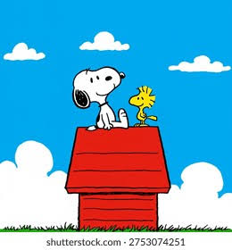
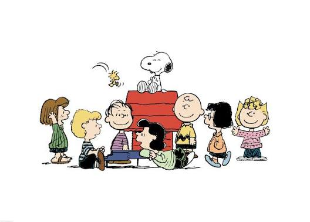

big fat button
hello with snoopy!
big fat button
#lapeace #happy

Snoopy ist eine Comic-Figur aus der amerikanischen Comic-Serie The Peanuts von Charles M. Schulz. Er ist ein anthropomorpher Beagle, der über viel Vorstellungskraft verfügt und mit seinem Besitzer Charlie Brown und dessen Freunden Abenteuer erlebt, ihnen freundschaftlich beisteht und über alltagsphilosophische Fragen reflektiert.

Snoopy ist einer der bekanntesten Charaktere des ‘Peanuts’−Comicstrips, der mit über 17.000 Folgen und Übersetzungen in mehr als 20 Sprachen eine der erfolgreichsten Comic-Serien der Welt ist.[1] Snoopys ikonische Gestalt und sein Bekanntheitsgrad übertrifft in manchen Kulturen noch den von dessen Besitzer Charlie Brown.
youtube channel
bye